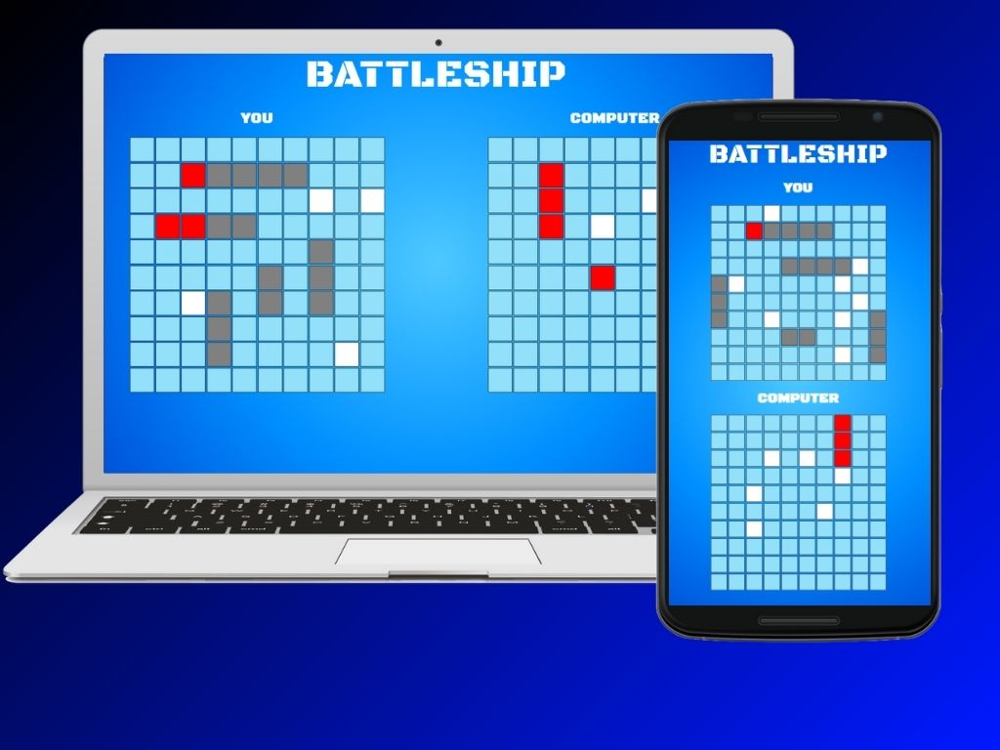

Allow me to introduce myself.
I’m a self-driven software developer with over three years of hands-on experience building user interfaces, web applications, and interactive software using technologies like ReactJS, JavaScript, Unity/C#, and modern development tools such as Webpack, Vite, and Git. I graduated with a B.S. in Computer Science from the University of Texas at Tyler in May 2024, and since then, I've continued refining my skills through both professional work and personal projects.
I’m especially passionate about front-end development and creating intuitive, maintainable user experiences — but I’m always open to expanding into new areas of software development. Whether I’m collaborating on team-based projects or working independently, I’m dedicated to continuous learning and delivering high-quality, thoughtful solutions.
Outside of coding, I enjoy balancing my technical curiosity with social and creative pursuits. You’ll often find me learning new technology or building out a project (usually both) — and just as often, connecting with friends and enjoying the vibrant community around automotive culture. It’s this blend of focus and balance that drives both my professional growth and personal fulfillment.
Technical Skills
- JavaScript
- HTML
- CSS
- Unity/C#
- ReactJS
- Vite
- Vitest
- Jest
- Java
- C
- Unreal Engine
Featured Projects
Battleship
A classic game of Battleship built with vanilla JavaScript, using Webpack, Test-Driven Development (TDD) with Jest, and modular ES6 architecture. Players can place ships, attack opponents, and watch explosions as they battle to sink each other's fleets.
Weatherly

Weatherly is a responsive weather app built with vanilla JavaScript, HTML, and CSS, and modularized using Webpack. Created as part of The Odin Project curriculum, it showcases practical JavaScript skills such as API integration, modular code structure, form handling, and responsive UI design. Weatherly fetches real-time data from the Visual Crossing API and features theme toggling, persistent settings, city search, and mobile-friendly layouts—delivering a smooth and modern user experience.
SwifTask

SwifTask is a minimalist task management app built from scratch using vanilla JavaScript, HTML, and CSS, with a modular architecture powered by Webpack. Developed as part of The Odin Project, it emphasizes clean code structure, dynamic UI rendering, and local storage for data persistence. Users can create tasks with due dates and priorities, organize them by project, and mark them as complete—all within a responsive and intuitive interface.
PixelStrike

PixelStrike is a fast-paced multiplayer FPS game built in Unity/C#, featuring real-time networking powered by Photon Unity Networking (PUN). Designed with a modular architecture and responsive UI, the game includes essential multiplayer mechanics such as player health systems, a live leaderboard, and a dynamic lobby system. Players can join matches, take damage, track scores, and personalize their experience with persistent player names saved via PlayerPrefs.
GeoDash

GeoDash is a dynamic 3D game developed in Unity that challenges players to run endlessly through a procedurally generated path while collecting coins and avoiding obstacles. Featuring smooth, responsive controls and immersive background music, the game offers a continuous, engaging experience designed to test reflexes and encourage high-score competition. The game speed progressively increases over time, adding to the challenge. Key features include a coin collection system, dynamic obstacle spawning, real-time score tracking, and an intuitive user interface.
TopicLadder (Capstone)

The Poll Creation and Voting App delivers a smooth and immersive user experience for those looking to engage in polls without the need for user authentication. I was responsible for designing and implementing the UI using custom CSS, ensuring a clean, intuitive, and responsive interface. This app offers a strong, real-time, and user-centric platform for both creating and participating in polls, making it accessible to a broad audience.
Experience
TechServ Engineering and Consulting
(January 2025 - Present)
Performed inspections of utility pole construction using proprietary drafting software, ensuring compliance with NESC safety standards. Made design edits and provided recommendations to maintain safety and adhere to protocols for communication and power companies. Tracked permit statuses efficiently using Microsoft Excel.
Discount Tire Co.
(August 2020 - January 2025)
In a dynamic and high-paced work setting, I led a team of up to five skilled technicians, ensuring not only their efficiency but also the overall organization of operations. My role extended to effective customer communication, guaranteeing that their specific requirements were met to their satisfaction. Furthermore, I took on the responsibility of promptly resolving any challenges encountered by the technicians during their service tasks, ultimately streamlining job completion and enhancing overall efficiency.
Let's connect!